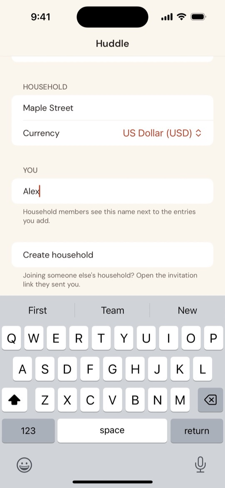
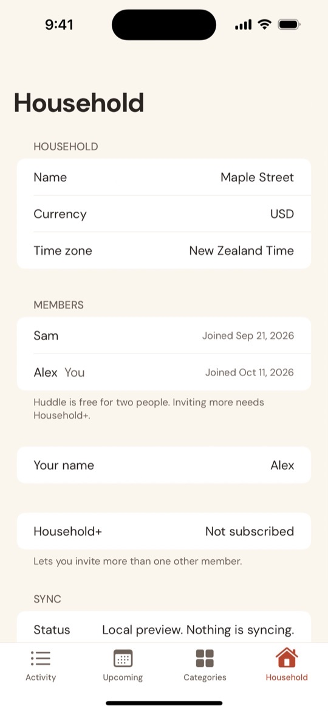
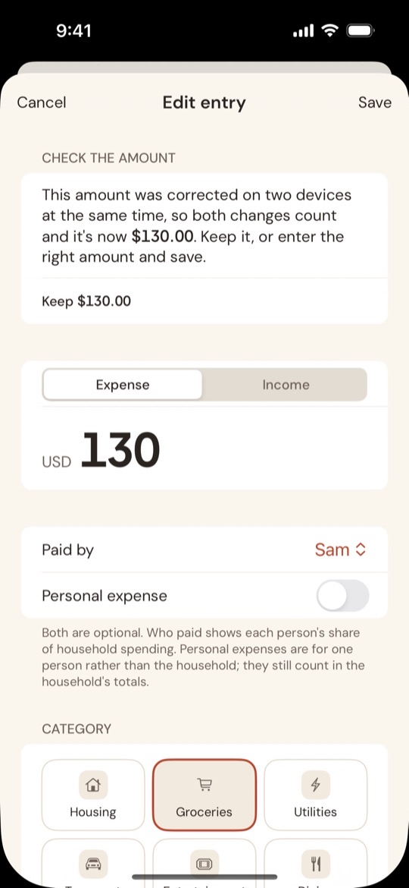
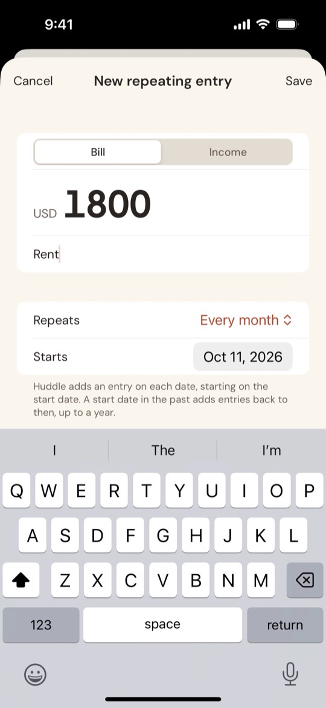

Get started
Setup takes about five minutes. One person creates the household and the other joins it.
What you need
- An iPhone or iPad for each person, with iOS or iPadOS 17 or later.
- Each person signed in to iCloud with their own Apple Account. To check, go to Settings → [your name]. If you see "Sign in to your iPhone", sign in first.
Huddle keeps your household in iCloud, so it has no account or password of its own.
Set up your household
1. Install Huddle (both of you)
Huddle is in beta on TestFlight. Ask for an invite, open it on your iPhone, then tap Accept and Install.
2. Create the household (one person)
- Enter a Household name, for example The Smith House.
- Pick the household's Currency. It can't be changed later.
- Enter Your name. Members see it next to the entries you add.
- Tap Create household.
The household belongs to the person who creates it, and its data counts towards their iCloud storage. Day to day, everyone in it has the same access.

3. Invite your partner
- Open the Household tab and tap Invite a member.
- Send the link with Messages, Mail or Copy Link.
Huddle is free for two people. Inviting a third needs Household+.
4. Your partner joins
- With Huddle installed, open the invitation link on your iPhone or iPad.
- Confirm you want to open it in Huddle. You'll see "Joining the household…".
- Enter your name and tap Continue.
The shared feed appears, with anything already added.

Not seeing the household? Make sure you opened the link on a device signed in to the iCloud account the invitation was sent to, then pull down on the feed to refresh.
Add entries
On the Activity tab, type into the bar at the bottom the way you'd send a message: an amount and a category, in any order. Huddle shows how it reads the line before you tap send.
| You type | Huddle adds |
|---|---|
| 126.40 groceries | An expense of $126.40 in Groceries |
| groceries 126.40 weekly shop | The same, with the note "weekly shop" |
| +3000 salary | Income of $3,000.00. A + means income; an income category such as Salary does too. |
| groc 54.20 | An expense in Groceries. Partial or singular names like groc or grocery work. |
| 126.40 groceries @sam | An expense in Groceries that Sam paid |
Anything Huddle doesn't recognise as the amount, category or payer becomes the note. If it can't find a category, the entry goes under "No category" and you can choose one later.
For a different date or a longer note, tap + and choose Add expense or Add income. The form also lets you set who paid, or mark it as a personal expense.

Read the feed and totals
The top of the Activity tab shows the month's household net, with income and expenses beneath it. Use the arrows to see earlier months.
Who paid appears once an entry says who paid. It shows each person's share of the household's spending, and personal spending separately.
Available to spend, above the entry bar, is the month's net plus the repeating income and bills still due this month.

Fix mistakes
Change an amount
Tap the entry, change the amount and tap Save. It's saved as a correction: the feed shows Corrected from $18.50, and the original stays in the entry's history.
Delete an entry
Tap the entry, then Delete entry. It leaves the totals, and you can still see it under Filter → Show deleted entries.
Needs review
If you both change the same entry at once, or one of you was offline, both changes count and the entry waits under Needs review. Either of you taps it and chooses Keep, or enters the right amount.

Repeating entries
Open the Upcoming tab and tap +. Enter the amount, a name such as Rent, how often it repeats and when it starts. You can also set Repeat when adding an entry with the full form.
Huddle adds a real entry on each date, once, even with two phones in different time zones. Upcoming lists what's due in the next 30 days. To end one, open it and tap Stop repeating; entries it has already added stay.

Categories
In the Categories tab you can add your own categories, rename one or archive one you don't use. Past entries keep their category. Give a category a monthly limit to see how much of it the household has used this month.

The Household tab
- Members: who's in the household and when they joined. The owner can remove someone; anyone else can Leave household. Their entries stay, marked as from a former member.
- Sync: whether everything has reached iCloud. Sync now checks straight away.
- App lock: require Face ID, Touch ID or your passcode, and choose how soon Huddle locks.
- How Huddle protects your data: what's encrypted, what isn't and where it's stored.
- Export entries: every entry as a CSV file.
- Household+: invite more than two members.
That's it. Add entries as they happen and check the feed together. If something isn't working, see Support.